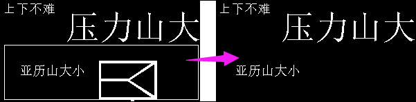

| 命令名称 | Filter_LeaveSize 保留大小 |
| 命令功能 | (针对黑白图像处理)保留指定大小范围的色块 |
| 语法格式 | TURING.Filter_LeaveSize(Width, Height, Through) |
| 参数说明 |
Width：整数型，保留宽大小 Height：整数型，保留高大小 Through：布尔型，可选，是否穿透（默认：True穿透） |
| 返回值 | 无 |
| 按键精灵 |
复制代码
'获取屏幕图像数据
Call TURING.Pixel_FromScreen(0,0,300,150)
'二值化处理
Call TURING.Filter_Binaryzation("128-255")
'显示获取的图像
Call TURING.Pixel_Preview()
'保留指定大小的色块范围
Call TURING.Filter_LeaveSize(60,60)
'图像预览
Call TURING.Pixel_Preview()
|
| 滤镜效果 |  |